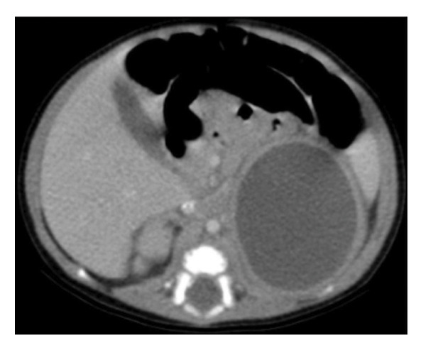
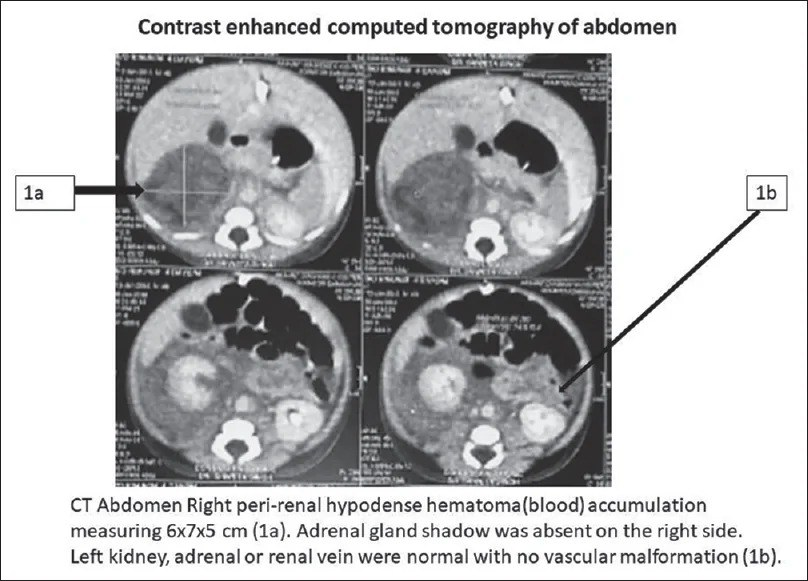
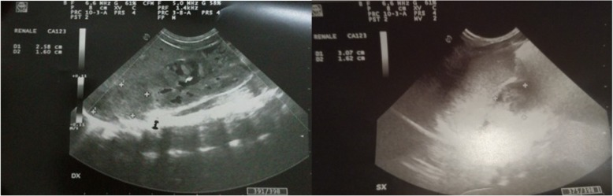
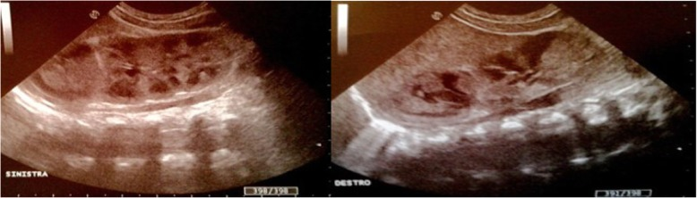
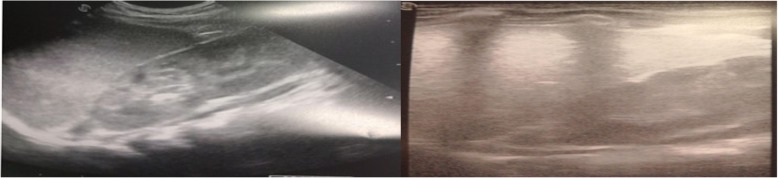

6112 — Xuất huyết thượng thận ở trẻ sơ sinh: khối trên thận "đổi hình theo ngày"
Tags: pattern:khoi-thuong-than pattern:thay-doi-theo-thoi-gian pattern:khong-tuoi-mau vung:thuong-than vung:than protocol:sieu-am-so-sinh protocol:CT-bung-co-can-quang incidentaloma:khoi-thuong-than-so-sinh
Mức chắc chắn (certainty): tổng hợp y văn (literature synthesis) — ghép một ca theo dõi siêu âm liên tục từ ngày 1 tới ngày 88 (Ital J Pediatr 2019, PMC6507044), một ca xuất huyết thượng thận dạng nang có CT đối chiếu (Case Rep Pediatr 2026, PMC12950900), một ca vỡ thượng thận gây sốc giảm thể tích (J Indian Assoc Pediatr Surg 2026, PMC13614821) và so sánh 36 máu tụ với 40 u nguyên bào thần kinh trên CT (World J Oncol 2024, PMC10807921).
Câu hỏi thực hành: sơ sinh đủ tháng, ngày thứ 3, đẻ khó phải đẩy bụng, khối vùng hông lưng phải 4 cm, da tái, huyết sắc tố tụt từ 16,5 xuống 11,8 g/dL, vàng da nhẹ. Siêu âm thấy khối trên thận phải, hỗn hợp âm, không có dòng chảy. Câu hỏi: máu tụ thượng thận hay u nguyên bào thần kinh? Có phải chụp CT? Theo dõi bao lâu thì được coi là "hết"? Khi nào phải xét suy thượng thận? Bài chốt ba việc: (1) đọc khối thượng thận theo TRỤC THỜI GIAN (tăng âm → hóa lỏng → nang → vôi hóa → biến mất trong 20–165 ngày); (2) phân biệt với u nguyên bào thần kinh bằng cấu trúc + mạch + xét nghiệm, không bằng một lần chụp; (3) hai bên hoặc có triệu chứng thì phải xét suy thượng thận (Na⁺, K⁺, glucose, cortisol). Nối 6111 – Huyết khối tĩnh mạch thận sơ sinh, 630 – U bụng nhi: neuroblastoma vs Wilms, 151 – U thận đặc.
1. Tổng quan bệnh học – cơ chế hình ảnh: vì sao khối này "tự đổi hình"
- Vì sao thượng thận sơ sinh dễ chảy máu: tuyến lớn gấp 10–20 lần người lớn tính theo cân nặng, được nuôi bởi 3 động mạch thượng thận với 50–60 nhánh đổ vào vỏ tuyến xốp, còn tĩnh mạch phải đổ trực tiếp vào tĩnh mạch chủ dưới — nên chỉ một thay đổi áp lực tĩnh mạch hay một lực chèn ép (gan – cột sống) là đủ gây vỡ. Thượng thận phải chiếm ~70% các ca (đoàn hệ CT mới: 86,1%), hai bên 5–10% (Ital J Pediatr 2019, PMC6507044; J Indian Assoc Pediatr Surg 2026, PMC13614821).
- Dịch tễ (ngưỡng định lượng): 0,2–0,55% trẻ sinh sống (Case Rep Pediatr 2026, PMC12950900) — trong khi một đoàn hệ khác ghi 1,7–2,1/1000 (0,17–0,21%) (BMC Pediatr 2022, PMC9069721); gặp ở trẻ đủ tháng nhiều hơn, nam nhiều hơn trong các loạt ca — nhưng đoàn hệ CT 76 sơ sinh cho thấy tỉ lệ nam 52,8% vs 62,5% không khác biệt (p = 0,391), tức "nam chiếm ưu thế" là thiên lệch báo cáo, không phải sinh học chắc chắn (World J Oncol 2024, PMC10807921).
- TẠI SAO hình ảnh đổi theo ngày (vật lý của cục máu): máu tụ trải qua chuỗi co cục (clot retraction) → ly giải hồng cầu → hóa lỏng → tái hấp thu hoặc vôi hóa. Trên siêu âm: ngày 0–3 tăng âm, đặc, to; 1–2 tuần hóa lỏng → hỗn hợp âm, ổ giảm âm trung tâm, mức dịch–dịch, vách; ~2 tháng thành nang trống âm; 1/3 ca vôi hóa, có thể sớm ngay 1–2 tuần (Ital J Pediatr 2019, PMC6507044). Trên CT: cục máu cấp 50–80 HU, không ngấm thuốc, viền mỏng ngấm thuốc là mô thượng thận bị ép, không có thành phần đặc (Case Rep Pediatr 2026, PMC12950900).
- TẠI SAO thiếu máu và vàng da: máu nằm trong khoang kín bị ly giải → vàng da gián tiếp (đỉnh 11,7 mg/dL) và Hb tụt (ca thực tế 15,2 → 7,5 g/dL; ca khác 19,6 → 15,8 trong 3 ngày đầu) (PMC12950900; PMC9069721).
- Thời gian "hết": biến mất hoàn toàn trong 20–165 ngày, phần lớn 3–3,5 tháng, tối đa 9 tháng; vì vậy mốc theo dõi tối thiểu là 90 ngày, và khối còn sau mốc này là lý do nghĩ u (Ital J Pediatr 2019, PMC6507044; BMC Pediatr 2022, PMC9069721).
2. Mẫu hình + chẩn đoán phân biệt theo vị trí và theo "trục thời gian" (gamut)
- Trục thời gian (đặc trưng riêng của xuất huyết thượng thận — không bệnh nào khác có): tăng âm đặc (ngày 0–3) → hỗn hợp âm + mức dịch (tuần 1–2) → nang teo dần (tuần 2–8) → vôi hóa viền ở 1/3 ca → biến mất. Một khối "đổi hình" qua 2 lần siêu âm cách nhau 1–2 tuần gần như loại u đặc.
- Theo vị trí: trên thận, tách khỏi thận (thượng thận) · trong thận (u nguyên bào thận, nang trên thận, ổ áp-xe) · dưới cơ hoành, đáy phổi trái (phổi biệt lập ngoài thùy dưới hoành) · sau phúc mạc giữa/khoang cạnh sống (u quái sau phúc mạc, hạch thần kinh) · gan phải (u gan, máu tụ dưới bao).
- Sáu hàng chính của "khối thượng thận sơ sinh": xuất huyết thượng thận · u nguyên bào thần kinh · áp-xe thượng thận · nang thượng thận/lymphangioma · phổi biệt lập ngoài thùy dưới hoành · tăng sản thượng thận bẩm sinh thể khối (hai bên, đối xứng). Thêm: thận đôi có cực trên ứ nước, u quái sau phúc mạc, huyết khối tĩnh mạch thượng thận trong RVT (bài 6111).
- Mnemonic "NAH" để không quên 3 việc: No flow (không có dòng chảy trong khối) – Age (đổi hình theo tuổi khối) – Hormone (bilateral → kiểm tra hormon).
3. Bảng so sánh phân biệt (ma trận đối chiếu)
| Thực thể (entity) | Hình ảnh điển hình | Chốt vào (rule-in) | Chốt loại (rule-out) | Gợi ý xác nhận |
|---|---|---|---|---|
| Xuất huyết thượng thận (NAH) | Khối trên thận, hình tam giác/bầu dục, tăng âm rồi hóa lỏng, không có dòng chảy, thận bên dưới bình thường | Đổi cấu trúc qua 2 lần siêu âm + không có mạch trong khối + thận bình thường | Khối đặc, có mạch, không đổi sau 3 tháng → nghĩ u | Siêu âm lặp 1–2 tuần, rồi hằng tháng tới ≥ 90 ngày |
| U nguyên bào thần kinh (neuroblastoma) | Khối đặc, có thể vôi hóa thô, có mạch, bờ không đều, có thể vượt đường giữa, phát hiện trước sinh 75% | Có mạch trong khối + vôi hóa + không teo theo thời gian + LDH/ferritin cao | Không có mạch, teo dần, không vôi hóa → NAH | VMA/HVA nước tiểu, MIBG, sinh thiết; theo dõi 3 tháng |
| Áp-xe thượng thận | Khối dịch dày, vách, khí trong khối, thành ngấm thuốc, to lên dù đã kháng sinh | Sốt + CRP cao + khí/vách + thành ngấm thuốc | Khối giảm dần, không thành ngấm, không khí → NAH | Chọc hút/dẫn lưu + cấy khi nghi áp-xe |
| Nang thượng thận / lymphangioma | Trống âm thuần, thành mỏng, không đổi hình nhanh, có thể vách mảnh | Thuần dịch, không tăng âm ban đầu, không co nhỏ nhanh | Có phần đặc/tăng âm thoái triển → NAH | Siêu âm; MRI nếu cần |
| Phổi biệt lập dưới hoành | Khối đặc, có mạch nuôi từ động mạch chủ, thường bên trái, sát cơ hoành | Thấy nhánh động mạch nuôi từ ĐMC | Không có mạch nuôi từ ĐMC, có chuỗi hóa lỏng → NAH | CTA tìm động mạch nuôi (không dùng siêu âm đơn thuần) |
| Tăng sản thượng thận bẩm sinh thể khối | Hai bên, đối xứng, giữ hình tuyến, không có ổ dịch | Hai bên đối xứng + Na⁺ thấp/K⁺ cao + 17-OHP cao | Một bên, có ổ dịch/hóa lỏng → NAH | 17-OHP, điện giải, cortisol |
Số liệu tách NAH khỏi u nguyên bào thần kinh (76 sơ sinh, CT): phát hiện trước sinh 11,1% (NAH) vs 75,0% (u) (p < 0,001); bên phải 86,1% vs 52,5% (p = 0,003); cân nặng 3,56 vs 4,50 kg; LDH 667 vs 299 U/L; ferritin 574 vs 319 µg/L; NSE 31,95 vs 45,65 ng/mL; bác sĩ CĐHA đọc mù đạt AUC 0,831 (độ chính xác 81,6%), mô hình học máy AUC 0,985 (World J Oncol 2024, PMC10807921). U nguyên bào thần kinh có tỉ lệ ~1,75/100.000 trẻ — hiếm hơn xuất huyết thượng thận nhiều lần (Ital J Pediatr 2019).

CT có cản quang ở sơ sinh 12 ngày tuổi (nhiễm khuẩn huyết E. coli): khối giảm mật độ đồng nhất vùng thượng thận trái, viền mỏng ngấm thuốc, không vôi hóa, không thành phần đặc — hình ảnh của máu tụ đã hóa lỏng, không phải u. Đây là lý do CT chỉ dùng khi siêu âm không kết luận, không dùng để "theo dõi cho chắc". Nguồn: Case Rep Pediatr 2026 (PMC12950900), CC BY 4.0, nguyên bản.4. Protocol chụp + ngưỡng xử trí
- Siêu âm là đầu tay, không cần chuẩn bị, không bức xạ: đầu dò linear 7–12 MHz (sơ sinh), quét mặt cắt vành/xiên qua hông lưng hai bên, đo 3 chiều, ghi âm độ (tăng/hỗn hợp/trống âm), vách, mức dịch, vôi hóa, bật color/power Doppler để chứng minh không có dòng chảy trong khối. Bắt buộc thêm: hai thận + tĩnh mạch thận + tĩnh mạch chủ dưới (NAH và RVT đi cùng nhau) và hai thượng thận (bên đối diện có thể bị bỏ sót).
- Lịch theo dõi tối thiểu: 1–2 tuần, sau đó mỗi 4 tuần tới khi biến mất; không kết luận "hết" trước 90 ngày vì trung vị 3–3,5 tháng, tối đa 9 tháng.
- CT có cản quang khi: khối có thành phần đặc/ngấm thuốc, vôi hóa thô, còn sau 3 tháng, to lên, nghi áp-xe, hoặc chuẩn bị mổ. Dùng liều thấp, một thì tĩnh mạch cửa; tránh lặp CT — mỗi lần vẫn là một liều bức xạ trên trẻ sơ sinh.
- MRI thay thế khi cần đánh giá mô máu mà không muốn bức xạ: T1 sáng (methemoglobin), T2 thay đổi theo giai đoạn, không ngấm thuốc — nhưng sơ sinh thường phải gây mê/ủ ấm, cân nhắc lợi ích.
- Xét nghiệm phải lấy cùng lúc: công thức máu, bilirubin, glucose, Na⁺, K⁺; cortisol 8 giờ sáng + ACTH nếu hai bên hoặc có tụt huyết áp, nôn, hạ Na⁺, tăng K⁺, hạ đường huyết; VMA/HVA nước tiểu + AFP nếu nghi u.
flowchart TD
A[Khoi tren than o so sinh] --> B[Sieu am bung: do 3 chieu, Doppler mau]
B --> C{Co thanh phan dac, co mach, voi hoa tho?}
C -->|Khong co mach va khong dac| D[Xuat huyet thuong than]
C -->|Co| E{Nghi u nguyen bao than kinh}
D --> F{Hai ben?}
F -->|Khong| G[Theo doi sieu am 1-2 tuan roi moi 4 tuan, toi >= 90 ngay]
F -->|Co| H[Lay Na, K, glucose, cortisol 8 gio, ACTH]
H --> I{Na thap, K cao, cortisol thap, huyet ap tut?}
I -->|Co| J[Suy thuong than: hydrocortisone + fludrocortisone, hoi chan noi tiet]
I -->|Khong| G
E --> K[VMA/HVA nuoc tieu, AFP, MIBG, CT/MRI co can quang]
K --> L{Sinh thiet hay theo doi?}
L --> M[Quyet dinh theo hoi chan ngoai khoa nhi]
G --> N{Khoi con sau 3 thang hoac to len?}
N -->|Co| K
N -->|Khong| O[Bien mat: khong can theo doi tiep]
- Suy thượng thận — ngưỡng và bằng chứng: hiếm nhưng thường xuất hiện trong tuần đầu và gần như chỉ ở ca hai bên; biểu hiện có thể im lặng rồi tụt huyết áp, nôn, hạ Na⁺, tăng K⁺, hạ đường huyết. Ca minh họa: cortisol 8 giờ sáng 2,82 µg/dL (bình thường 5–25), sau đó ACTH 353 pg/mL (bình thường < 46), phải dùng hydrocortisone 1 mg/kg/ngày + fludrocortisone 0,01 mg/kg và vẫn điều trị ở 16 tháng (BMC Pediatr 2022, PMC9069721). Vì vậy: không dùng một cortisol "bình thường" lúc còn sốc để loại trừ — làm lại khi ổn định, và hỏi ý kiến nội tiết.
- Sốc do vỡ thượng thận: khối máu tụ 6 × 7 × 5 cm quanh thận, mất bóng thượng thận, hồi sức + điều trị bảo tồn thành công; VMA nước tiểu bình thường giúp loại u (J Indian Assoc Pediatr Surg 2026, PMC13614821).

Vỡ thượng thận phải ở sơ sinh đủ tháng: (1a) máu tụ giảm mật độ quanh thận phải 6 × 7 × 5 cm, không thấy bóng thượng thận phải; (1b) thận, thượng thận và tĩnh mạch thận bên trái bình thường, không có bất thường mạch. Bé nhập viện vì suy hô hấp và sốc ngày đầu — đây là mặt nguy hiểm của bệnh cảnh "khối hông lưng tình cờ". Nguồn: J Indian Assoc Pediatr Surg 2026 (PMC13614821), CC BY-NC-SA 4.0, nguyên bản.5. Biến thể bình thường và cạm bẫy
- Thượng thận sơ sinh "bình thường" đã to và tăng âm: hình chữ Y/chữ V ngược/wishbone ôm cực trên thận; trong vài ngày đầu lớp vỏ bào thai thoái triển có thể không đều âm. Đừng gọi là khối nếu giữ hình tuyến, không có ổ dịch, không có hiệu ứng khối — và luôn so hai bên.
- Vôi hóa sớm KHÔNG đồng nghĩa u: 1/3 ca xuất huyết thượng thận vôi hóa, có thể ngay 1–2 tuần; cái phân biệt là vôi hóa viền + khối teo dần, còn u thì đặc, có mạch, không teo.
- "To lên" ở tuần 2–5 là hóa lỏng, không phải tiến triển: ca minh họa 4,0 × 4,5 cm (ngày 12) → ~5 × 4 cm (ngày 36) rồi nhỏ dần và biến mất sau ngày 45 — nếu chỉ nhìn một mốc sẽ tưởng áp-xe/u (PMC12950900).
- CT có thể bỏ sót: máu tụ đồng mật độ với cơ/mô xung quanh ở giai đoạn muộn; siêu âm nhạy hơn ở giai đoạn sớm, nên "CT âm tính" không loại trừ nếu siêu âm thấy khối.
- AFP cao là sinh lý ở sơ sinh — đừng dùng AFP đơn thuần để "chẩn đoán u"; VMA/HVA bình thường cũng không loại trừ tuyệt đối u nguyên bào thần kinh thể biệt hóa.
- Bỏ sót bên đối diện (satisfaction of search): đã thấy máu tụ phải là dừng — nhưng hai bên 5–10%, và hai bên mới là nhóm suy thượng thận.
- Suy thượng thận giả dạng nhiễm trùng huyết: nôn, hạ Na⁺, tăng K⁺, hạ đường huyết ở sơ sinh có khối thượng thận có thể là suy thượng thận hoặc giả suy thượng thận (pseudohypoaldosteronism) — điện giải và cortisol rẻ hơn một lần nhập ICU (J Educ Teach Emerg Med 2021, PMC10332690).
- Bìu sưng tím ở sơ sinh: máu có thể chảy theo ống phúc mạc xuống bìu gây "acute scrotum"; siêu âm bìu thấy máu tụ nhưng phải chụp cả thượng thận trước khi nghĩ xoắn (Discoveries 2025, PMC12323913).
6. Tự lượng giá — Blind Quiz
Ca 1 — Sơ sinh 12 ngày, nhiễm khuẩn huyết E. coli, siêu âm tình cờ thấy khối trên thận trái 4 × 4,5 cm.
- Gợi ý lâm sàng: sốt, CRP cao, cấy nước tiểu E. coli; không có tiền sử chấn thương.
- Câu hỏi: Khối ngấm thuốc hay không? Có vôi hóa/thành phần đặc? Ba chẩn đoán phân biệt? Có cần chọc/dẫn lưu ngay không?
Bấm để hiện đáp án (findings + chẩn đoán)
- Dấu hiệu (findings): khối giảm mật độ đồng nhất vùng thượng thận trái, viền mỏng ngấm thuốc, không có thành phần đặc, không vôi hóa, không xâm lấn tạng lân cận.
- Chẩn đoán (diagnosis): xuất huyết thượng thận đã hóa lỏng (máu tụ dạng nang); phân biệt: áp-xe thượng thận (thành dày ngấm thuốc, khí, sốt dai dẳng), u nguyên bào thần kinh dạng nang (có mạch/đặc, không teo), u quái.
- Vì sao không chọc ngay: không có ổ dịch hoại tử, bệnh nhi ổn định, khối giảm dần trên siêu âm lặp lại — điều trị bảo tồn + kháng sinh là đủ.
- Nguồn ảnh: Case Rep Pediatr 2026 (PMC12950900), CC BY 4.0, nguyên bản.
Ca 2 — Sơ sinh đủ tháng đẻ khó, siêu âm ngày 1 và ngày 15.

- Gợi ý lâm sàng: vai bị kẹt khi sinh, tụ máu dưới da đầu, vàng da tăng dần.
- Câu hỏi: Mô tả âm độ và bờ khối. Vì sao khối không có dòng chảy lại là thông tin quan trọng? Hai tuần sau em kỳ vọng thấy gì?
Bấm để hiện đáp án
- Dấu hiệu (findings): hai khối trên thận hai bên, bờ rõ, hỗn hợp âm, có ổ giảm âm trung tâm, thận bên dưới bình thường; thước đo trên màn hình: 2,16 × 1,60 cm (phải) và 3,07 × 1,62 cm (trái).
- Chẩn đoán (diagnosis): xuất huyết thượng thận hai bên sau sinh khó.
- Vì sao "không dòng chảy" quan trọng: u đặc (nguyên bào thần kinh) có mạch; máu tụ không có mạch — Doppler là chốt rule-in rẻ nhất.
- Hai tuần sau (đối chiếu ảnh dưới): hóa lỏng với mức dịch–dịch, vách, ổ trống âm — khối có thể to hơn một chút rồi mới teo.

- Ảnh ngày 15: isoechoic–anechoic, có thành phần đặc nhỏ + mức dịch + vách, không có mạch — đúng chuỗi hóa lỏng, không phải áp-xe vì không có thành ngấm thuốc/khí và bệnh nhi không sốt.
- Nguồn ảnh: Ital J Pediatr 2019 (PMC6507044), CC BY 4.0, nguyên bản.
Ca 3 — Cùng bệnh nhi, siêu âm ngày 88: có phải đã "hết" không?

- Gợi ý lâm sàng: đã ngừng hydrocortisone ở ngày 88, tăng cân tốt, không triệu chứng.
- Câu hỏi: Hình thượng thận hai bên bây giờ thế nào? Vì sao mốc 90 ngày lại quan trọng? Nếu ở ngày 180 vẫn còn khối thì làm gì?
Bấm để hiện đáp án
- Dấu hiệu (findings): không còn khối, thượng thận trở về hình tuyến mảnh, thận và xoang thận bình thường.
- Chẩn đoán (diagnosis): hồi phục hoàn toàn sau xuất huyết thượng thận hai bên — mốc 88 ngày, nằm trong khoảng 20–165 ngày.
- Vì sao 90 ngày: trung vị 3–3,5 tháng; hết trước 90 ngày là bình thường, còn sau 90 ngày phải theo dõi tiếp và bắt đầu nghĩ u nếu đặc/có mạch/vôi hóa thô.
- Nếu còn ở ngày 180: siêu âm + Doppler, cân nhắc MRI/CT và VMA/HVA, hội chẩn ngoại nhi — không chọc sinh thiết mù một khối có thể là máu tụ đang teo.
- Nguồn ảnh: Ital J Pediatr 2019 (PMC6507044), CC BY 4.0, nguyên bản.
Bài liên quan chéo
- 6111 – Huyết khối tĩnh mạch thận ở trẻ sơ sinh: thận to, mất dòng tĩnh mạch và tăng RI
- 630 – U bụng nhi: neuroblastoma vs Wilms
- 151 – U thận đặc: phân biệt u nguyên phát và di căn
- 605 – Siêu âm phổi điểm sơ sinh
- 635 – Dị tật tiết niệu nhi: SFU, VUR, PUV
- 3044 – Catheter tĩnh mạch trung tâm ở trẻ
- 600 – Tổng quan Nhi khoa
Ảnh
- 5 ảnh, tất cả tải về nguyên bản (không crop, không ghép), ghi nguồn + giấy phép từng ảnh trong
images/CREDITS.md. - Không tạo composite: mỗi nguồn đã tự ghép panel theo thời điểm (ngày 1 / ngày 15 / ngày 88; 1a–1b), ghép thêm sẽ làm mất nhãn của tác giả và gây hiểu sai về cùng một bệnh nhi.
Không dùng để chẩn đoán độc lập khi chưa có người hướng dẫn.